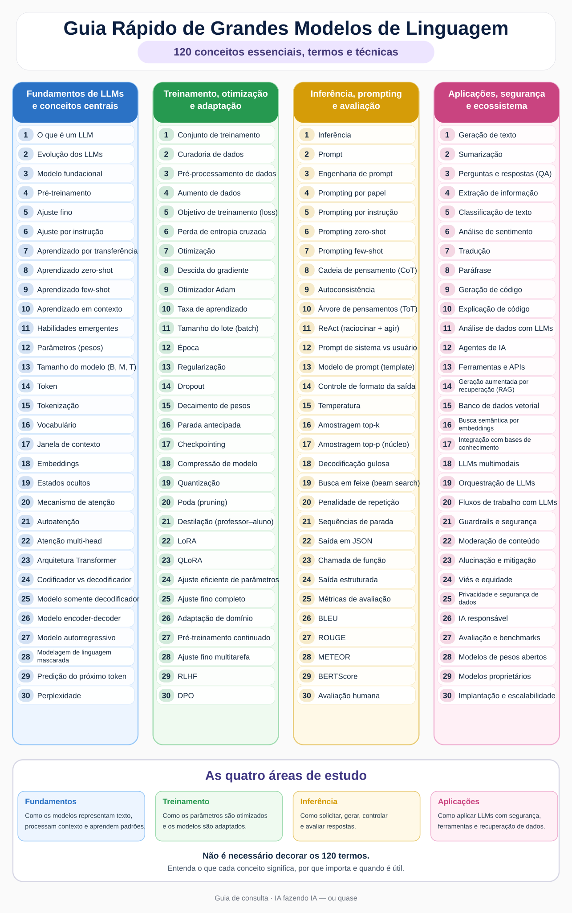

COMPLEMENTO VISUAL / LLMs
Guia rápido de grandes modelos de linguagem
120 conceitos organizados em quatro trilhas: fundamentos; treinamento e adaptação; inferência e avaliação; aplicações e segurança. Use o pôster como mapa de estudo e aprofunde cada tema conforme sua necessidade.


Você não precisa memorizar os 120 termos. O objetivo é entender seu significado, sua utilidade e as situações em que são aplicados.